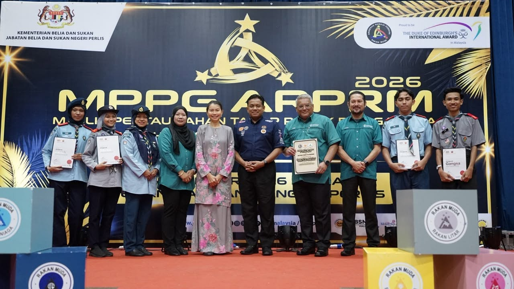

TAHUN 2026
3 Anugerah Perak
2 Anugerah Gangsa
i. Anugerah Remaja Perdana Rakan Muda (ARPRM) 2026
Kejayaan membanggakan ahli KSM PTSS merangkul 3 pingat Perak dan 2 pingat Gangsa melalui pelengkap komponen Khidmat Masyarakat, Kemahiran, Rekreasi Fizikal dan Penjelajahan Lasak.